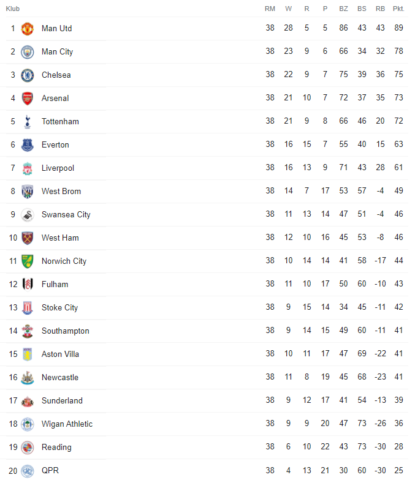

Sezon 2012/2013
Strona główna
1. Ranking najwięcej zdobytych mistrzostw Anglii
2. Najlepsi strzelcy w historii mistrzostw Anglii
3. Sezon 2019/2020
4. Sezon 2018/2019
5. Sezon 2017/2018
6. Sezon 2016/2017
7. Sezon 2015/2016
8. Sezon 2014/2015
9.Sezon 2013/2014
10.Sezon 2012/2013
Tabela sezonu 2012/2013
Najlepsi strzelcy
| Lp. | Zawodnik | Gole | Klub | Mecze | Wiek | Narodowość |
| 1. |  Robin Van Persie Robin Van Persie | 26 |  | 38 | 29 |  Holandia Holandia |
| 2. |  Luiz Suarez Luiz Suarez | 23 |  | 33 | 26 |  Urugwaj Urugwaj |
| 3. |  Gareth Bale Gareth Bale | 21 |  | 33 | 23 |  Walia Walia |
| 4. |  Christian Benteke Christian Benteke | 19 |  | 34 | 22 |  Belgia Belgia |
| 5. |  Michu Michu | 18 |  | 35 | 27 |  Hiszpania Hiszpania |